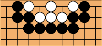

Stoical Go
Luis Bolaños Mures
Posted on Jan 16, 2013, 12:35:46 AM
STOICAL GO
In this Go variant, standard ko rules don't apply. Instead, it's illegal to make a capture if your opponent made a capture on his previous move.
All other rules are the same as in Go. Suicide of one or more stones is not allowed, and area scoring is used.
All known forced Go cycles (basically those described in the Sensei's Library article plus the funny pinwheel ko) are impossible with this rule. The nature of the rule itself suggests that forced cycles are either impossible or astronomically rarer than they are in Go when the superko rule is not used.
It's interesting that, while ko fights are usually not possible in finite Go variants, here not only are they possible, but also ko threats have an additional use compared to Go: when a player wants to answer a capture with another capture, he has to make ko threat before being able to do so.
A while ago, I posted on LifeIn19x19.com about this rule, which I then called "passive ko", and it generated some discussion. One player illustrated the rule with this simple position:
[NA]
White to play kills if Black doesn't have any suitable ko threats available. In Go, Black is simply alive.
I've also programmed the game for Zillions of Games. I've implemented all odd-sized boards from 7x7 to 19x19, as well as the option to use neutral blocking pieces to change the shape of the board.
Re: Stoical Go
Bill Taylor
Posted on Jan 17, 2013, 9:12:25 AM
On Jan 16, 1:35 pm, Luis Bolaños Mures wrote:
> *STOICAL GO*
>
> In this Go variant, standard ko rules don't apply. Instead, it's illegal
> to make a capture if your opponent made a capture on his previous move.
That doesn't really seem too hot! It would affect a huge number
of other positions that are not related to ko at all.
It is quite usual that a capture in one part of the board is
followed by a capture in another part. (e.g. as part of a miai
situation, or some other reason). Your rule would not distinguish.
And any attempt to define "same part of the board" precisely is
full of horrors, as many old debates on rec,games.go have shown.
One old suggestion about ko was, "no ko can ever be fought";
which doesn't change the game TOO badly, and makes it ko-less.
It needs careful definition, but can be done:- something like,
"it is illegal to capture one stone if the capturing stone
would then be in a position to be taken on its own".
For people who don't like ko, this would probably do.
However, most good players are very keen to get tangled
up in kos, as it gives them yet another tactical area where
they can use their expertise. It is also, like making
ladder breakers, a way in which a player who is about
to lose a battle, can get *some* compensation for it.
And as Go is a game of market share, rather than killing,
that is all to the good!
BTW, the page that mentioned "Pinwheel ko" didn't mention
that both the name and the position are my own inventions.
Not that it matters. :-)
-- Winding-around William
Q: How many Go players does it take to change a light bulb?
A: One, but only if the ladder works!
Re: Stoical Go
Luis Bolaños Mures
Posted on
luis....@gmail.com's profile photo
luis....@gmail.com
unread,
Jan 18, 2013, 12:11:58 AM
to recregamesc...@googlegroups.com
El jueves, 17 de enero de 2013 10:12:25 UTC+1, Bill Taylor escribió:
That doesn't really seem too hot! It would affect a huge number
of other positions that are not related to ko at all.
Obviously, any attempt to eliminate cycles with a rule that doesn't require book-keeping is going to change the game into something quite different, but I think Stoical Go is both different and interesting. :)
One old suggestion about ko was, "no ko can ever be fought";
which doesn't change the game TOO badly, and makes it ko-less.
It needs careful definition, but can be done:- something like,
"it is illegal to capture one stone if the capturing stone
would then be in a position to be taken on its own".
This rule changes the game to a far greater extent than Stoical Go. For instance:

The white group has no real eyes, but it's unconditionally alive under your rule.
Also, your rule doesn't even prevent most cycles.
Eternal life,
sending-two-returning-one,
sending-three-returning-two and
round-robin ko are still possible.
My goal was not eliminating ko, but forced cycles. Actually, in Stoical Go, ko fights proceed much the same as in Go, with the difference that captures and moves answered by captures aren't valid ko threats.
Re: Stoical Go
Luis Bolaños Mures
Posted on Jan 18, 2013, 12:27:51 AM
El jueves, 17 de enero de 2013 10:12:25 UTC+1, Bill Taylor escribió:
One old suggestion about ko was, "no ko can ever be fought";
which doesn't change the game TOO badly, and makes it ko-less.
It needs careful definition, but can be done:- something like,
"it is illegal to capture one stone if the capturing stone
would then be in a position to be taken on its own".
Interestingly enough, not even the following similar, broader rule would prevent all known forced cycles:
It's illegal to make a capture if the capturing stone would then be in a position to be taken on its own.
The round-robin ko is still possible with this rule.